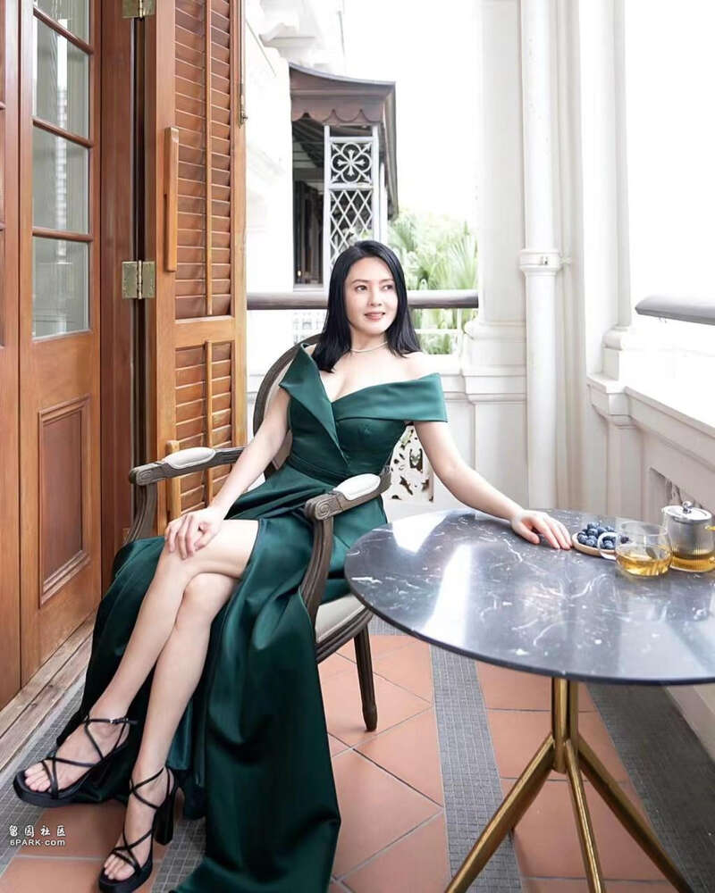

昔日港片女神李丽珍不知不觉间已经是年过半百，同时在近些年来，她相对来说，在幕前的曝光度还是不高，所以大家对她的关注度也就慢慢变少。
不过在近日，现年58岁的李丽珍就因为一组照片而再次引起大家的关注，她在社交平台上分享出了近照，身材可以说是重返了她的全盛时期的状态，十分养眼。
因为在去年，李丽珍曾表示自己长时间呆在家中煲剧，并且还不断地吃零食和吃夜宵，高峰时体重更是已经超过了120磅，比她当时怀孕时候体重还要重。
从李丽珍之前晒出的一些照片中，也的确是可以看出她发福了不少，并且看起来很有师奶的感觉。
所以意识到自己的身材已经是完全走样的李丽珍，也终于行动了起来，她开始少食多餐，并且再加上运动，慢慢地体重也就减了下来。
她在社交平台上留言称：有恒心就有好成绩，我要继续保持。同时她也分享了她的减肥成果，称经过了几年的疫情以及家中的一些琐事困扰，令得她难以控制情绪。
所以在这种情况下，李丽珍选择了不断煲剧、吃零食以及宵夜的方式来发泄自己的情绪，但在这种不健康的方式下，李丽珍的身材也是开始走样了。
因此在去年的三月份拍摄完张国荣的音乐录像以后，她便下定决定要减肥，认为自己不能够再这样下去了。
有了这个动力的李丽珍便马上开始了行动，她说：当时有段时间去到了120磅，那么肥将来怎么拍戏？我就从去年三月份开始减肥。
在经过十几个月的减肥，李丽珍在六个月之后已经是成功减去了20磅，并且如今的她已经是回归到了她的巅峰状态。

从李丽珍分享出来的照片中，可以看到她不同于之前，她散发出来的是非常自信的感觉，完全不像是将近60岁的人。
照片中的李丽珍身穿着一身华丽的墨绿色晚装，深V设计大秀事业线，并且李丽珍一对大长腿也是格外吸引人，状态非常好。
所以在李丽珍分享出这组照片之后，不少网友也都是纷纷点赞，大夸李丽珍的状态已经是回归到了全盛时期。
而至于李丽珍的减肥方法，其实也是很简单的，她就是从戒零食、宵夜开始做起，并且多运动以及少食多餐，再加上偶尔做一下针灸瘦脸，因此最终就可以达到李丽珍现如今的这个效果啦。
不过在说到李丽珍的全盛时期，就不得不提起当年的她为了事业突破，还更是出演了限制级电影《蜜桃成熟时》，该作品也是令人印象深刻。
之后李丽珍还以400万片酬接拍了王晶的电影《玉蒲团之玉女心经》，之后李丽珍就选择收山，不再拍摄此类电影。
随后李丽珍便开始参演TVB的剧集作品，特别是《大时代》中的表现令人印象深刻，而比较近的作品还有在2013年为TVB拍摄的《女人俱乐部》也是很受大家的欢迎，之后李丽珍便继续活跃在幕前演出。
Advertisements